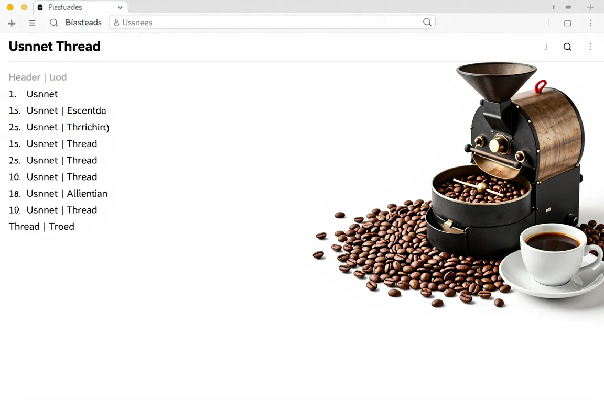

nett · c. 1980–1999 · også: Nyhetsgruppetråd, Netnews, Trådet nyhetsleser
En tråd av rene tekstinnlegg i en nyhetsgruppe, lest i en nyhetsleser i terminalen: et tre av emnelinjer, siterte linjer som starter med > og en signatur under hvert innlegg.

Kjerneidé
En diskusjon er et tre av svar i ren tekst, og hvert svar siterer den delen det svarer på.
Designprinsipper
Sett all tekst i én mono i én størrelse, 80 tegn per linje.
Vis tråden som et tre av emnelinjer, med 2 mellomrom innrykk for hvert svarnivå.
Start hver sitert linje med '> ', og legg til ett '>' til for hvert eldre nivå.
Legg en topptekstblokk på hvert innlegg: From, Newsgroups, Subject og Date, ett felt per linje.
Avslutt hvert innlegg med en signatur på høyst 4 linjer etter en linje med '-- '.
Marker gjeldende linje i trådlisten med omvendt video: lys tekst på en mørk stolpe.
Antimønstre
Proporsjonal skrift og skriftstørrelser for hierarki